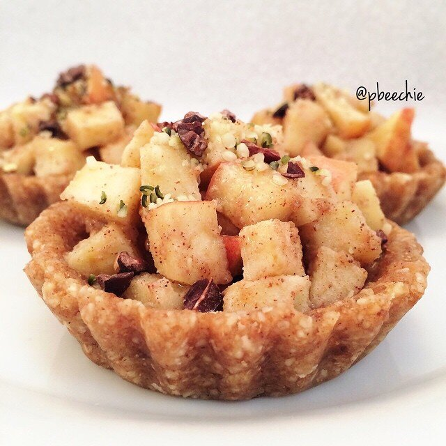

Maple Apple Tart
I made some maple apple tarts to go with the challenge for #TheFFChallenge (psssst it's on Instagram and you should check it out!). All the challenge entries are awesome! Okay the tarts - I love how light and refreshing these are!! And I thiiiiink they're raw vegan? Don't quote me on that ._. bc idk if Sweet Spreads is raw. So. Help me out guys? I always try to expand my understanding of all forms of 'diets' that people practice, and raw veganism is one I've been currently researching. I'm getting there and just enjoying the challenge :p just correct me if I'm wrong bc I know ya'll are smarties. 
- 1/2 cup pitted dates (80 g)
- 3/4 cup raw almonds
- 2 TBSP unsweetened applesauce
- 1/4 cup unsweetened shredded coconut
- 2 TBSP maple pancakes coconut butter (Sweet Spreads brand, or regular coconut oil)
Filling
- 1 large apple
- 2 TBSP maple pancakes coconut butter (Sweet Spreads brand)
Combine all of your crust ingredients in a food processor and blend until even. Keep it blending for 3-4 minutes until smooth and evenly mixed. Once finished, line 5 mini tart pans with saran wrap; this allows easy removal of the crust later. Roll your crust into 5 evenly sized balls; place one ball into each lined tart pan. Flatten the dough into the pan to form the tart shape. Refrigerate for 20 minutes to set. Dice 1 large apple and mix with 2 TBSP maple pancakes coconut butter in a bowl until the diced apple is fully coated. Spoon heaping servings of the filling into the base of each tart.
Top with anything else your heart desires! I added hemp seeds and cacao nibs.